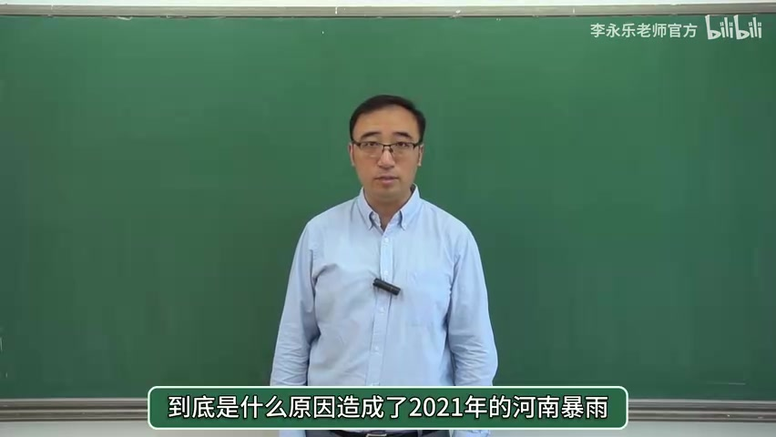
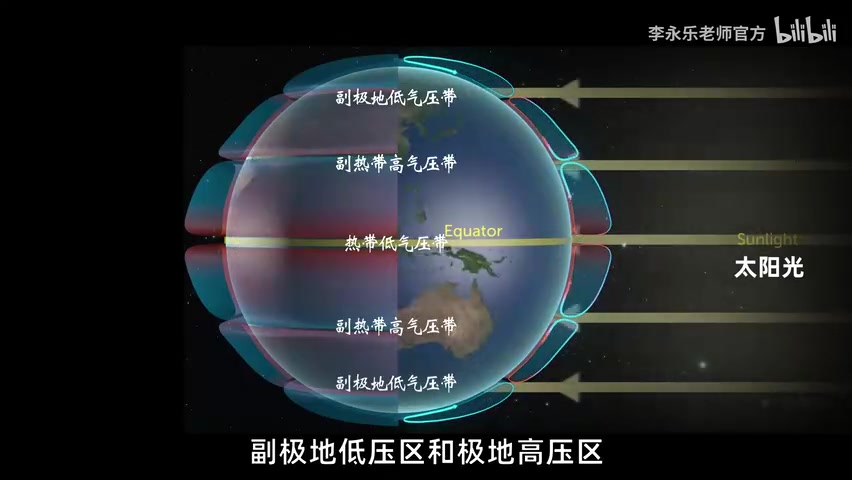
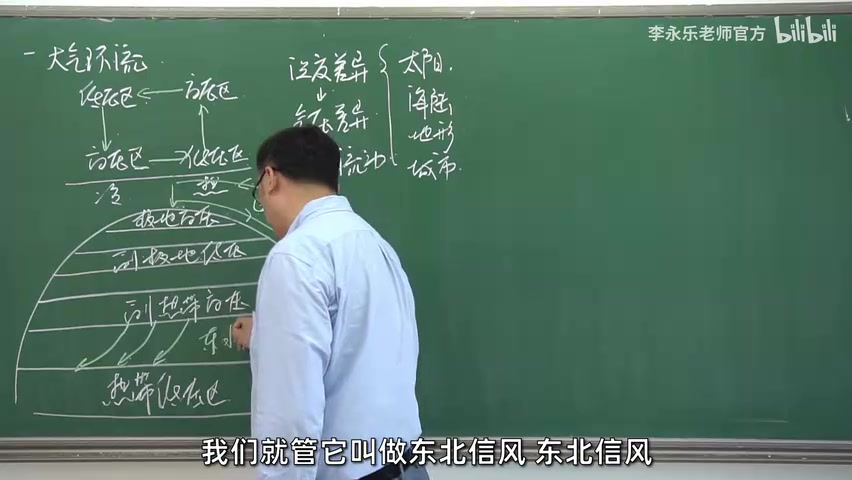
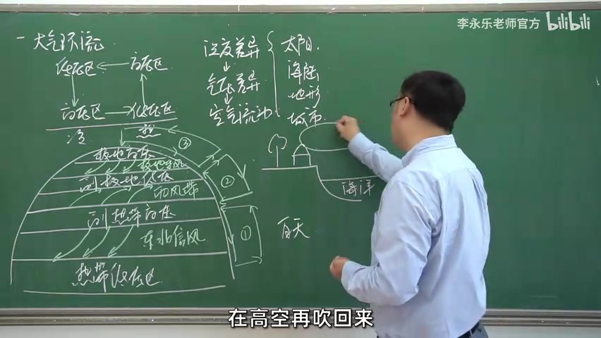
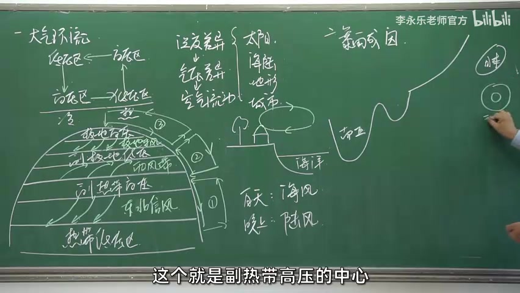
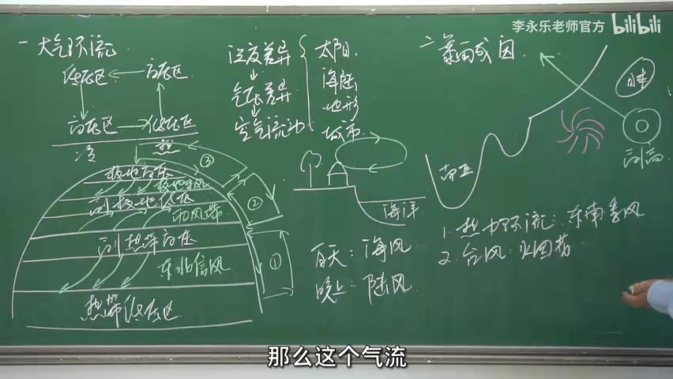
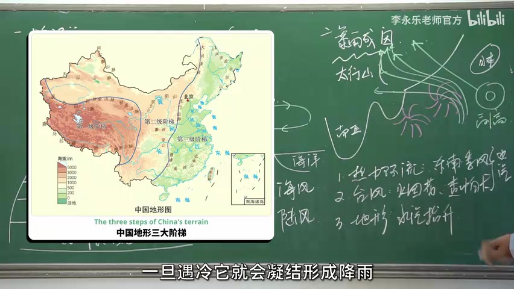

从一场暴雨开始提问
视频开头，李永乐老师先提到一轮波及多个地区的暴雨过程，然后把视线拉回 2021 年河南暴雨。小朋友们的问题很直接：暴雨究竟为什么会发生？他没有马上列出答案，而是先提醒大家，气象系统非常复杂，这一讲只从中学地理能触及的角度做一套简化解释。
“到底是什么原因造成了 2021 年的河南暴雨？”— 视频 00:30

冷热不均，空气便开始循环
第一块黑板从一个局部热源画起。空气受热膨胀并上升，近地面缺少空气，形成低压；冷处空气密度更大而下沉，近地面形成高压。高压把空气推向低压，高空也存在对应流动，于是一个闭合的热力环流出现了。
这里的叙述链条很清楚：温度差异带来气压差异，气压差异再推动空气流动。太阳直射、海陆热性质、地形与城市效应，都可能制造冷热不均；视频接下来重点展开太阳与海陆两项。
“温度的差异又造成了气压的差异，气压的差异最终又导致了空气的流动。”— 视频 01:47–01:59
把局部环流放大到整个北半球
太阳直射不均把地球切出不同的气压带。视频先用“赤道热、极地冷”的理想模型开场，再加入地转偏向力：向南北流动的空气会发生偏转，高空空气在约南北纬 30° 一带堆积、下沉，由此形成副热带高压。配合赤道低压、副极地低压和极地高压，三个纬向环流圈便被画了出来。

老师随即把关注点落回近地面风：副热带高压吹向赤道低压形成东北信风；吹向副极地低压形成西风带；极地高压向外则对应极地东风带。讲到西风带时，他插入二战气球炸弹的例子，说明稳定风带能够把高空气球跨洋送达；随后又强调，这仍是没有纳入海陆和地形影响的简化模型。

海陆一加入，风向就有了昼夜变化
接下来是一幅更贴近日常的海岸剖面。海洋热容量较大，白天升温慢；陆地白天升温快，近地面成为相对低压，风由海洋吹向陆地。夜晚陆地降温更快，近地面风向反过来，由陆地吹向海洋。视频用海风与陆风说明，真实大气环流会被下垫面改写，不能只靠纬向气压带一张图解释完。

铺垫八分多钟后，三个因素在河南会合
到了 08:44，老师清空出黑板右侧，开始直接回答标题中的问题。最终答案不是单一“元凶”，而是一条需要三个环节共同接上的链条。
第一段：副热带高压提供背景气流
老师先画出印度、东南亚、中国和日本的大致轮廓。他的解释是，夏季南亚大陆受热形成低压，副热带高压中心集中在太平洋一带；从海上指向中国大陆的东南气流携带大量水汽，这是容易降雨的第一个条件。

第二段：台风环流强化水汽输送
第二个条件来自台风。老师在东南沿海附近画出“烟花”，又在南侧补上“查帕卡”，用两个气旋的相对位置解释气流为何沿边缘转向大陆。到这里，热力环流与台风影响共同回答了“水汽从哪里来、怎样被送来”。

“水汽的形成是形成降雨的一个必要条件，但不是说只要有了水汽就一定会降雨。”— 视频 11:26–11:32
第三段：太行山让湿空气抬升凝结
最后一个条件解释“为什么郑州一带下得特别大”。视频转向中国三级阶梯与太行山：输送到内陆的湿空气遇到山地被迫抬升，随高度增加而冷却，水汽凝结成雨。于是，水汽背景、台风输送和地形触发不再是三个孤立名词，而是先后衔接的一条过程链。

解释收束在“共同作用”，而不是万能公式
结尾很短。老师再次说气象问题复杂，即便巨型计算机用于推演天气，人们也很难做出完全准确的预测。随后话题从成因解释回到现实生活：暴雨期间外出要注意安全，也要珍惜当下。
“这一次的降雨是多个因素共同作用造成的。”— 视频 12:46–12:50